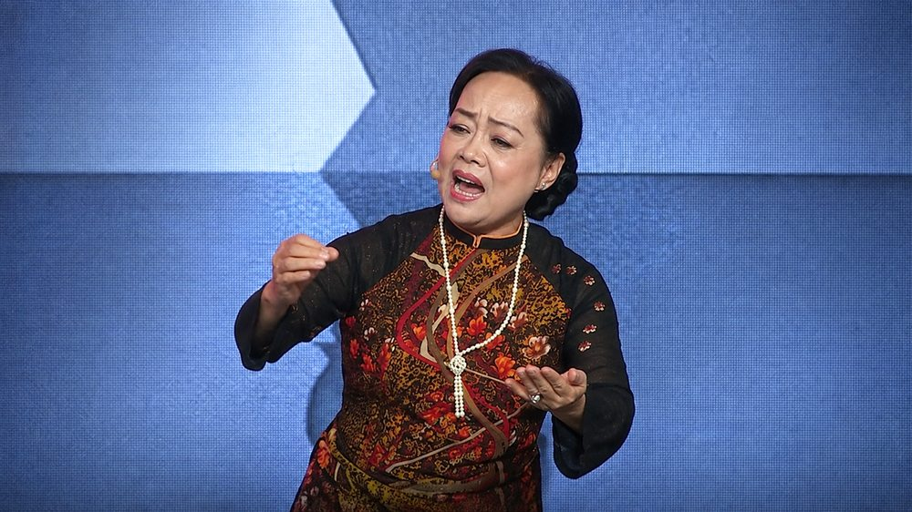
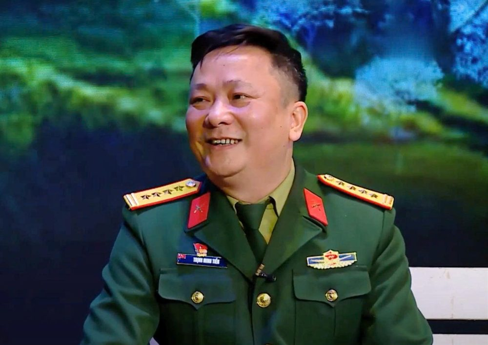
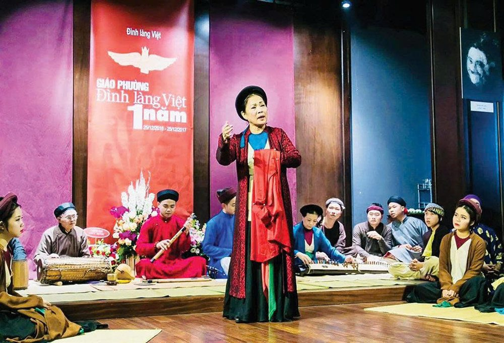
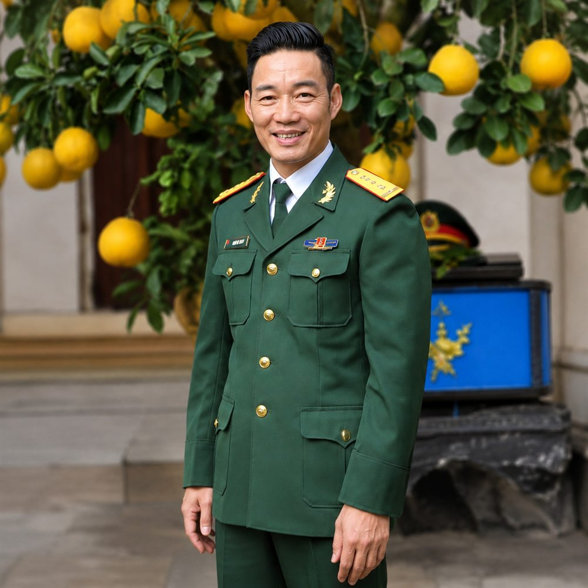

Phó Trưởng đoàn · Biên đạo múa
Con người của Nhà hát
Ban lãnh đạo qua các thời kỳ, 8 Nghệ sĩ Nhân dân và 26 Nghệ sĩ Ưu tú — những người đã dựng nên bảy thập kỷ chiếu chèo của Nhà hát.
Người đứng đầu
Những người chủ trì đơn vị từ ngày thành lập năm 1954, khi còn là Đội Văn công Tổng cục Cung cấp, cho tới Nhà hát Chèo Quân đội hôm nay. Chỗ nào chưa có tư liệu thì để trống chờ bổ sung.

Đoàn trưởng · 1954
Đoàn trưởng · 1954 - 1969

Đoàn trưởng · 1969 - 1973

Đoàn trưởng · 1973 - 1975

Đoàn trưởng · 1975 - 1989

Đoàn trưởng · 1989 - 2005

Đoàn trưởng 2005 - 2009 · Giám đốc 2010 - 7/2014

Phó Đoàn trưởng 2007 - 2009 · Giám đốc 9/2014 - 12/2024

Phó Giám đốc 9/2014 - 12/2024 · Giám đốc từ 12/2024

Chính trị viên · 1954

Chính trị viên · chưa rõ nhiệm kỳ

Chính trị viên · 2010 - 2012

Chính trị viên · 2012 - 5/2022

Chính trị viên · từ 6/2022

Phó Đoàn trưởng · chưa rõ nhiệm kỳ

Phó Đoàn trưởng · 1970 - 1985

Phó Đoàn trưởng · 1978 - 1982

Phó Đoàn trưởng · 1989 - 1991

Phó Đoàn trưởng 2002 - 2009 · Phó Giám đốc 2010 - 2011

Phó Giám đốc · 3/2011 - 3/2014

Phó Giám đốc · 9/2014 - 4/2023
Danh hiệu cao nhất
Tám nghệ sĩ của Nhà hát đã được Nhà nước phong tặng danh hiệu Nghệ sĩ Nhân dân — năm người năm 2015 và ba người năm 2023. Dòng dưới mỗi tên ghi cả năm được phong Nghệ sĩ Ưu tú trước đó.
NSND 2015 · NSƯT 1997
NSND 2015 · NSƯT 2001

NSND 2015 · NSƯT 2007

NSND 2015 · NSƯT 2007
NSND 2015 · NSƯT 2012

NSND 2023 · NSƯT 1998

NSND 2023 · NSƯT 2015
NSND 2023 · NSƯT 2015
Qua các thế hệ
Hai mươi sáu nghệ sĩ được phong tặng danh hiệu Nghệ sĩ Ưu tú, xếp theo năm phong tặng. Người sau đó được phong Nghệ sĩ Nhân dân có tên ở cả mục trên.
Tri ân
Phó Trưởng đoàn · Biên đạo múa
Đội trưởng Đội múa
Nhạc sĩ
Tác giả ca khúc “Trước ngày hội bắn”
Các đồng chí đã anh dũng hy sinh và vĩnh viễn nằm lại trên tuyến đường Trường Sơn trong kháng chiến chống Mỹ cứu nước.
Danh sách chỉ là những cái tên. Mời bạn tới xem một buổi diễn để nghe họ hát, và vào cửa hoàn toàn miễn phí.